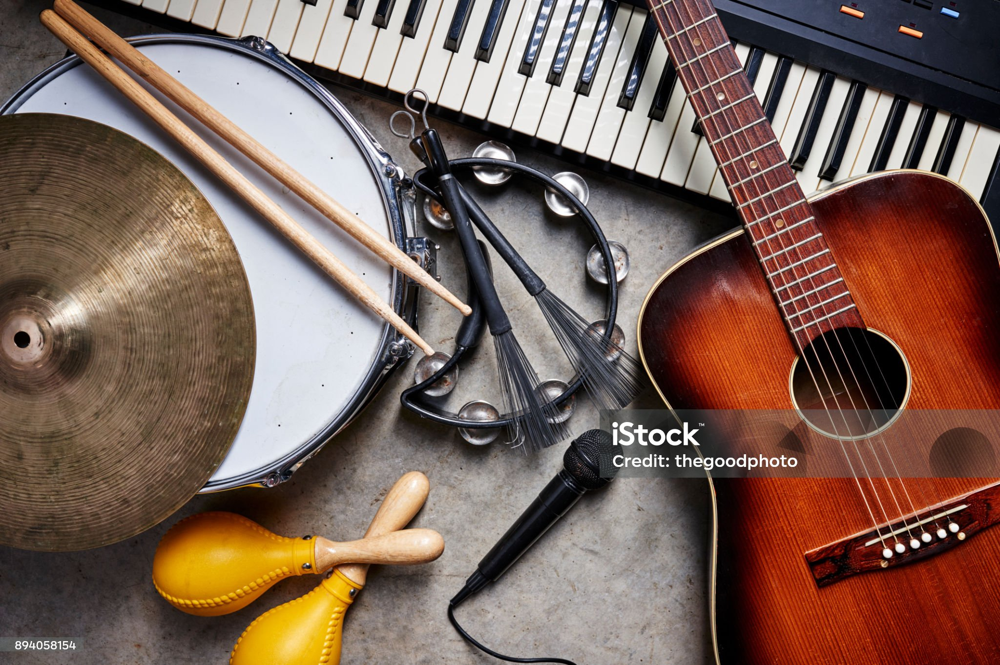

Guia de Instrumentos
Dicas de compra, história e anatomia dos equipamentos musicais.

Cordas
A Evolução das Guitarras Fender Stratocaster
Entenda por que este modelo se tornou o favorito de lendas como Jimi Hendrix e Eric Clapton desde a década de 1950.
Ler artigo completo →